サイト名称、データベースおよびパス・URLの設定を確認し、問題なければ「次へ」ボタンをクリックしてください。
また、再度、データベースおよびパス・URLの設定を入力しなおす場合、「戻る」ボタンをクリックしてください。
ソフトウェアにはバグがつきものです。また、NetCommonsの基盤を支える、MySQLやApache, PHP, Mapleなどに主要な変更があった場合、それに応じてNetCommonsも変更していきます。ですので、必ずNetCommons公式サイトから最新版をダウンロードしてください。古いバージョンでインストールされた方は、パッチファイルをあててから運用を始めてください。
決して古いバージョンをインストールするだけで本格運用はしないでください。
NetCommons公式サイトのユーザとして登録することをお勧めします。公式サイトからは、NetCommonsの脆弱性などが発見されたときに、お知らせが届きます。お知らせが届いたら、必ずセキュリティパッチをあてるなど、対策を施すことをお勧めします。公式サイトからはメールマガジンもお手元に届きます。
NetCommonsは次の環境で動作します。
- PHP4.3.9 以降
- データベース MySQL3.23以降
WebサーバApache 1.3もしくは2以降ですが、特に以下の組み合わせをお勧めしています。
- （PHP 4.3.9, MySQL 4.1.20, Apache 2.0.52）
（2008年8月18日現在）
OSはFedoraCore 7またはCentOS 5をお勧めしています。Red Hat Enterprise Linux 5では動作確認済みです。今後、FreeBSDやUNIXで動作確認を行う予定です。詳細はNetCommons公式サイトで公開します。
NetCommonsを実際に使用するにはまずMySQLおよびPHPが既にインストールされたサーバが必要です。特にサーバのOSを問うことはなく、ほとんどのOS上で動作することが確認されています。 ご自分でサーバを用意されるという方は、サーバにMySQLおよびPHPが既にインストールされていることをご確認ください。NetCommonsをインストールするのに必要なサーバ環境は以下のとおりです。
- WWWサーバ： Apache(2.0.xx)を特にお薦めします
- データベース： MySQL 4.0.xx
- PHP： PHP 4.3.9 以降
PHPおよびMySQLについては以下のサイトにて詳しい情報を入手することができます。
PHP：日本PHPユーザ会： http://www.php.gr.jp/
Mysql：日本MySQLユーザ会： http://www.mysql.gr.jp/既にmysqlおよびphpが導入済みのサーバであれば、インストール手順に従いインストールするのみです。初めてであっても10分もあればインストールでき、直ちにサイトの運営を開始できるところがNetCommonsの強みでもあります。
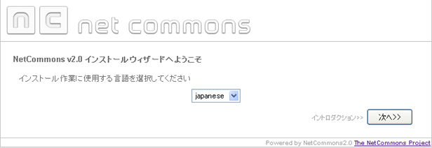
インストール作業に使用する言語を選択して、「次へ」ボタンをクリックしてください。
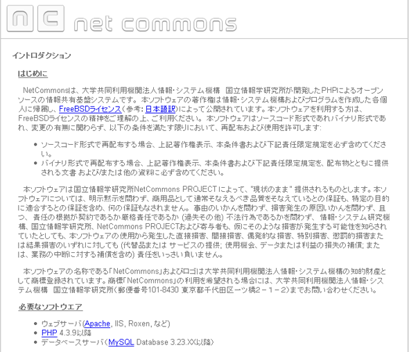
注意事項をお読みください。同意しましたら、「次へ」ボタンをクリックしてください。
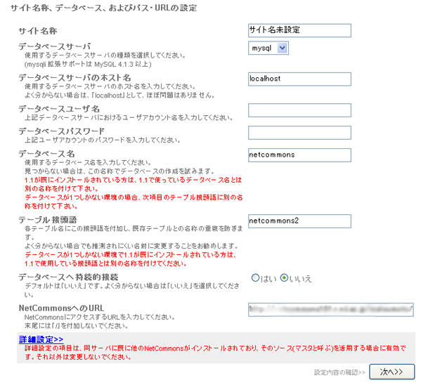
サイト名称、データベース、およびパス・URLを入力してください。
テーブル接頭語はデフォルトのままでも動作に問題はありませんが、セキュリティ上変更することをお勧めします。
データベースが1つしかない環境の場合、テーブル接頭語に別の名称を付けて下さい。
入力後、「次へ」ボタンをクリックしてください。
サイト名称、データベースおよびパス・URLの設定を確認し、問題なければ「次へ」ボタンをクリックしてください。
また、再度、データベースおよびパス・URLの設定を入力しなおす場合、「戻る」ボタンをクリックしてください。
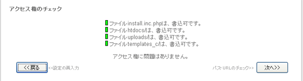
uploads、templates_c、htdocsディレクトリ及びinstall.inc.phpファイルの権限に書込み権限があれば、「次へ」ボタンをクリックしてください。
書き込み権限がない場合、NetCommonsのディレクトリ配下にuploads、templates_c、htdocsディレクトリ及びinstall.inc.phpがあります。
このディレクトリ及びファイルの権限に書き込み権限(chmod 777)を付加してください。
インストールするディレクトリと設定したパス・URLとのチェックを行います。正常に終了しましたら、「次へ」ボタンをクリックしてください。
もし、失敗した場合、install.inc.phpに設定されているパス及びURLとインストールするディレクトリが同じかどうかを確認し、
「再読込」ボタンをクリックして、設定ファイルを再度読み込んでください。
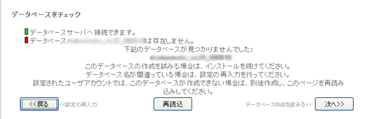
mysqlの接続とデータベースの存在を確認します。データベースが存在しない場合、「次へ」ボタンをクリックし、データベースを作成してください。
また、mysqlの接続に失敗した場合、mysqlがインストールされているか確認してください。
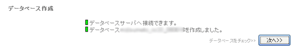
「次へ」ボタンをクリックし、mysqlの接続とデータベースの存在を確認します。
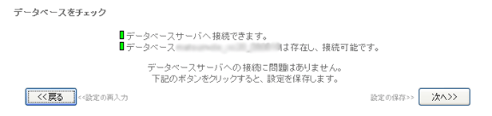
mysqlの接続とデータベースの存在を確認します。「次へ」ボタンをクリックし、設定を保存します。
また、mysqlの接続に失敗した場合、mysqlがインストールされているか確認してください。
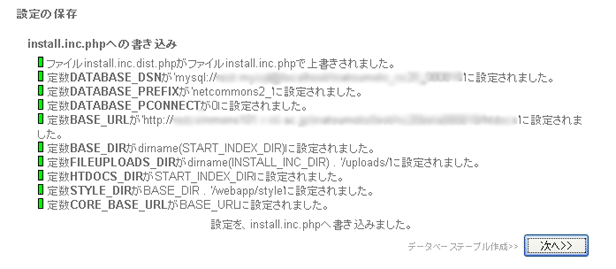
install.inc.phpへの設定内容の保存を確認します。「次へ」ボタンをクリックし、テーブルの作成を行います。
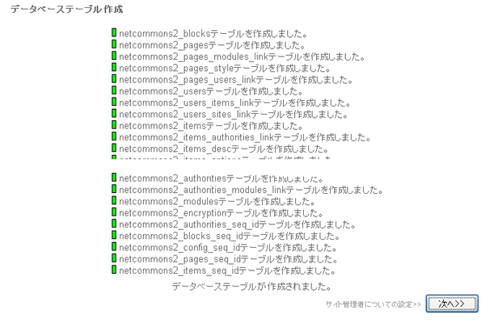
必要なテーブルを生成します。全て成功したら「次へ」ボタンをクリックしてください。
もし、失敗しましたら、データベースを破棄し、３からやり直してください。
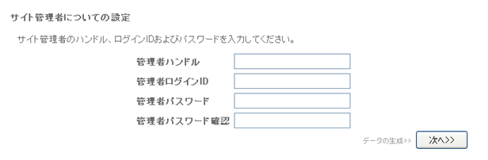
サイト管理者ユーザーの設定を入力してください。入力後、「次へ」ボタンをクリックしてください。
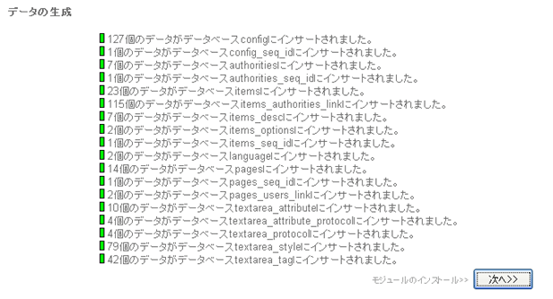
データベースのデータの生成結果が表示されます。正常に終了しましたら、「次へ」ボタンをクリックしてください。
失敗した場合、データベースに接続できないかテーブルが正しく生成されていない、または、データを一度生成した可能性があります。
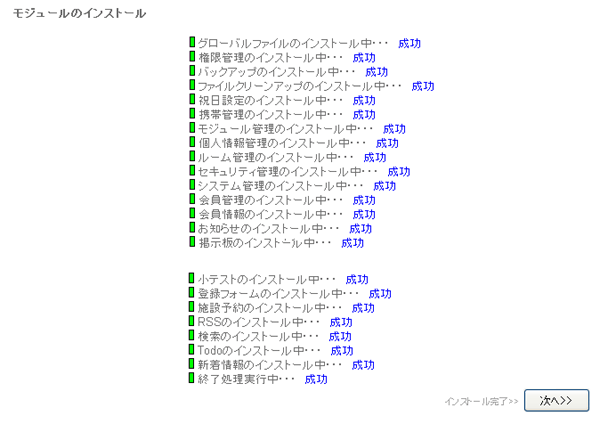
全モジュールのインストール結果が表示されます。正常に終了しましたら、「次へ」ボタンをクリックしてください。
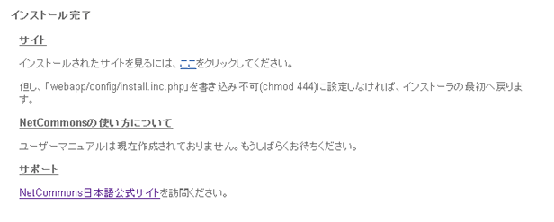
以上でインストールが正常に完了しました。
正しくインストールされているか設定したURLにリンクし、確認してください。
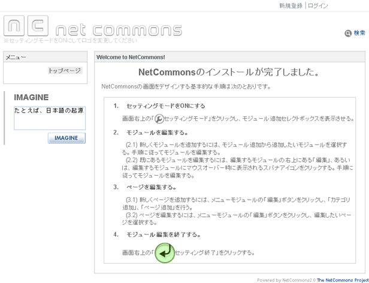
インストールされたNetCommonsにリンクし、管理者ユーザーでログインしてください。
トップページでセッティングモードをONにして、ヘッダー部のロゴを変更してください。
※ WEBサーバのhtaccessが有効になっているかどうかを確認したい
多くのCMSと同様に、NetCommonsでは（全てのバージョンにおいて）htaccessファイルによるアクセス制限機能を想定しています。
また、http以外の方法でのアクセスが許可されていないサーバ上に構築されていることを想定しています。
htaccessが有効になっているかどうかを確認する方法を参考までにご紹介します。
確認方法：
１）クライアントPC側で、.htaccessファイルとテキストファイル（例：nctest.txt）を作成する。
------------------------------
・ファイル名：.htaccess の内容
order deny,allow
deny from all
------------------------------
・テキストファイル：nctest.txtの内容
「アクセス確認」
------------------------------
２）FTP等のファイル転送ツールを使い、ご利用になっているサーバのドキュメントルートに ディレクトリ「testdir」を作成します。
３）クライアントPC側で作成した.htaccessファイルおよびテキストファイルを ディレクトリ「testdir」下に転送します。
４）ブラウザーのアドレス欄に転送したファイルまでのパスを指定します。
http://(サーバアドレスまたはドメイン)/testdir/nctest.txt
５）表示結果に「You don't have permission to access ** on this server」 または「Error 403 Access Denied (Forbidden)」「このページの表示が認められていません」
と表示された場合は、アクセス制限が正常に動作しています。
「アクセス確認」の文字が表示された場合は、アクセス制限機能が正しく動作していません。
（文字化けをしている場合は、ブラウザーのエンコード設定をご確認下さい）
※転送したファイル(nctest.txt)は、必ず削除してください。
アクセス制限機能が正しく動作していない場合は、サーバ設定の見直しまたはサーバ管理者にご相談いただきますようお願いいたします。
Apacheでのアクセス制限機能を有効にする方法を下記に抜粋します。
・htaccessを有効にする方法
httpd.confに下記の記述を追加または変更する
<Directory NetCommonsインストールディレクトリ>
AllowOverride All
</Directory>
・httpd.confのみで設定する場合(htaccess無効の場合）
<Directory NetCommonsインストールディレクトリ/maple>
order deny,allow
deny from all
</Directory>
<Directory NetCommonsインストールディレクトリ/webapp>
order deny,allow
deny from all
</Directory>